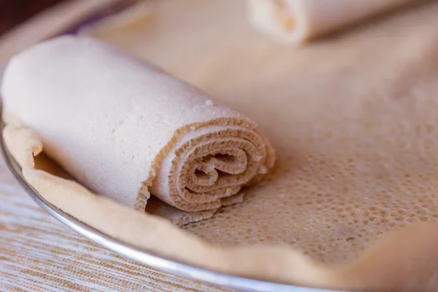

Traditional Injera Recipes from Ethiopia: Fluffy, Sourdough Flatbread with Unique Flavor and Texture.
Injera is a leavened flat bread. It is high in carbohydrate specifically starch which is a source of heat and energy. A good injera should be soft, glossy, fluffy & rolable with an even distribution of “eyes”(a honey comb like porous structure) on the top surface.
Ingredients
- teff flour 500 g
- Water 1450 ml
- Ersho 25 ml
Utensils
Bowl, sieve, sefed, sauce pan, ladle, mitad, and mesob
INSTRUCTIONS
- Sift teff PM flour in a bowl.
- Mix the flour with 450 ml water and knead well for about five minutes.
- Put the dough in a container with a lid.
- Add ersho on top of the dough and cover.
- Allow the dough to ferment for 24 hrs.
- Boil 500 ml water in a saucepan.
- Mix part of the fermented dough (200 g) with 75 ml of cold water.
- Prepare absit by add the mix in the boiling water and cook for about 2 min by constantly stirring
- Cool absit to about 45ᵒC and add to the fermenting dough.
- Add 250 ml of water, mix and allow to ferment for 2-3 hrs at room temperature.
- Heat mitad and polish with rapeseed powder using a piece of clean cotton material.
- about 500 ml of the batter in a circular manner on heated mitad and bake covered for about two minutes.
- Remove the injera from the mitad by sliding over sefed.
- Serve with sauces (vegetable or pulse or meat).
Some pictorial illustration of injera preparation

Mixing the sifted flour with water to prepare dough

Pouring the batter in a circular manner on a heated mitad

Removing the injera by lifting it from mitad and sliding over a sefed

Rolled and sliced injera ready for serving
Meaning of new Amharic word
- Teff
- refers to a small grain native to northern Africa, particularly Ethiopia and Eritrea, which is cultivated for its edible seeds and used to make flour
- Ersho
- Batter left from previous fermentation (starter culture).
- Sefed
- Traditional straw mat used for winnowing.
- Mitad
- Clay griddle used to bake injera.
- Mesob
- refers to a traditional Ethiopian and Eritrean basket used for storing injera, a flatbread.